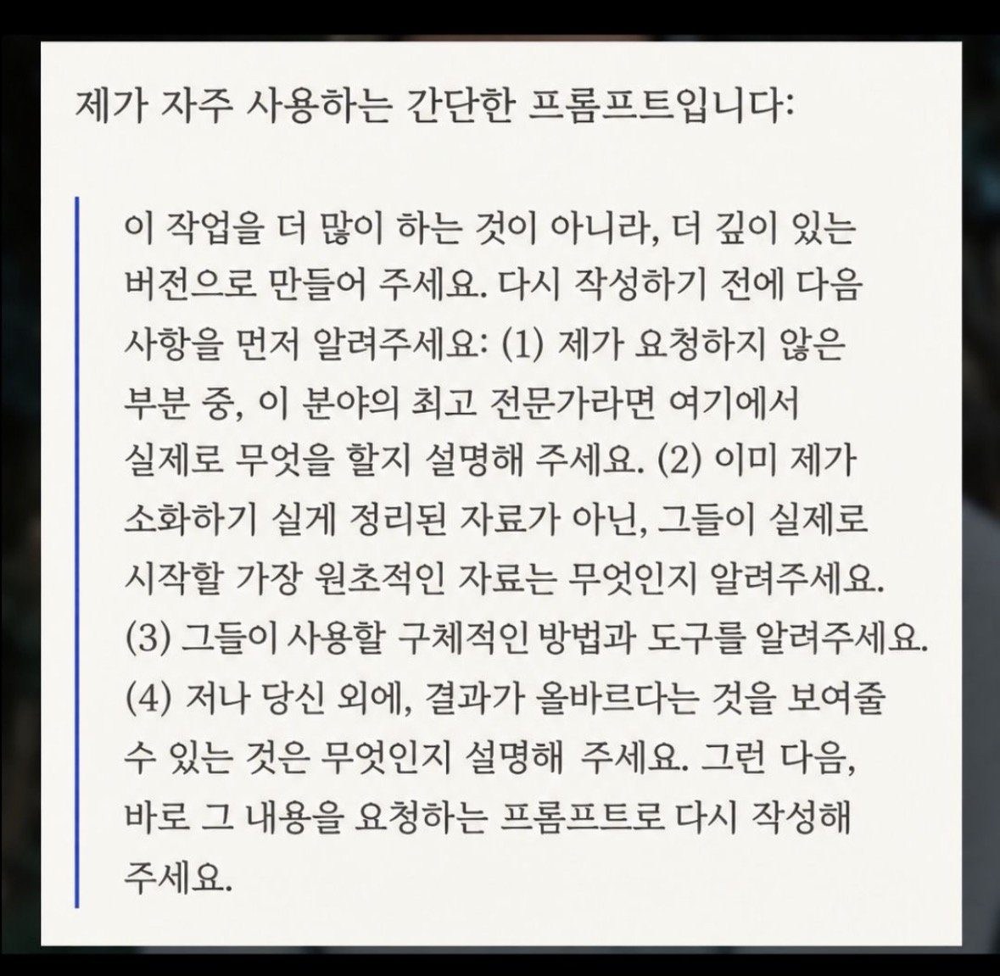

테크 · 사진 · 2026-11-24
작업을 더 깊이 있게 만드는 프롬프트 템플릿
작업을 양이 아닌 깊이 측면에서 개선하도록, 전문가의 관점·원천 자료·방법과 도구·검증 수단을 먼저 묻고 이를 반영해 프롬프트를 다시 쓰게 하는 프롬프트다.

- 작성자가 자주 사용하는 간단한 프롬프트로, 작업을 더 많이 하는 것이 아니라 더 깊이 있는 버전으로 만들어 달라고 요청한다.
- 첫째, 요청하지 않은 부분 중 이 분야의 최고 전문가라면 실제로 무엇을 할지 설명하게 한다.
- 둘째, 이미 소화하기 쉽게 정리된 자료가 아닌, 전문가가 실제로 시작할 가장 원초적인 자료가 무엇인지 묻는다.
- 셋째, 전문가가 사용할 구체적인 방법과 도구를 알려 달라고 한다.
- 넷째, 사용자나 AI 외에 결과가 올바르다는 것을 보여줄 수 있는 것이 무엇인지 설명하게 한다.
- 이 네 가지를 먼저 답한 뒤, 바로 그 내용을 요청하는 프롬프트로 다시 작성하게 한다.